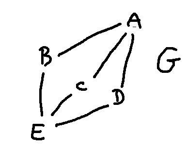

To get more insight into how isomorphisms work, let's try counting how many ways a graph can be matched to itself. Consider the following graph G.

We can reflect the graph about the middle, so that A swaps with E, and the edges will all match up correctly. We can also swap B and D. C looks different, but actually it can also be swapped with B or D. Remember that we care only about connectivity, not about geometry.
Counting these possibilities, we have 3 options for where to move B: B, C, or D. After we've done that, we have two places to move C. And then D has to go onto the remaining middle spot. And then we have two choices for how to place A and E. So a total of \((3\cdot 2) \cdot 2\) isomorphisms.
Notice that one of the isomorphisms in this count is the one that leaves every node in the same place.
The first part of that computation is actually the number of ways to permute three items. So it's better to think about the count as \(3! \cdot 2\) isomorphisms. If we add a fourth node in the middle group, as below, we'll have \(4! \cdot 2\) isomorphisms.

Let's look at a more complex example.
To attack this, let's identify places where we can split up the graph into sections that can be analyzed independently. First, the graph has three connected components. Each of these must map onto another connected component. Clearly the only possible swaps are between the two small ones.

Now, let's divide up the big component at vertices that are heavily constrained.
These three pieces are obviously very different (e.g. different numbers of nodes) so no hope of mapping one on top of another.
With this decomposition, let's analyze the ways that we could build an isomorphism. The two little components could swap, or not (2 choices). The two ends of each little component could swap (2 choices each). A and B could swap (2 choices). D, E, F, and G could be permuted (4! choices). I, J, and K could be permuted (3! choices).
So, in total, the number of possible isomorphisms is \((2\cdot 2 \cdot 2) \cdot 2 \cdot 4! \cdot 3!\).